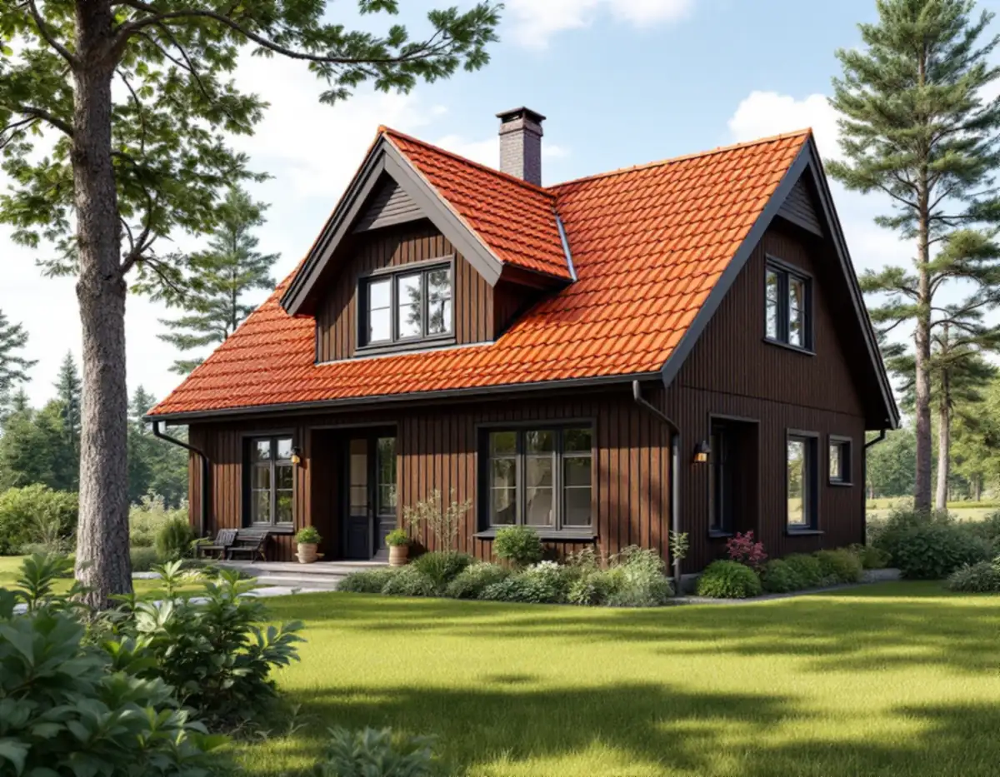
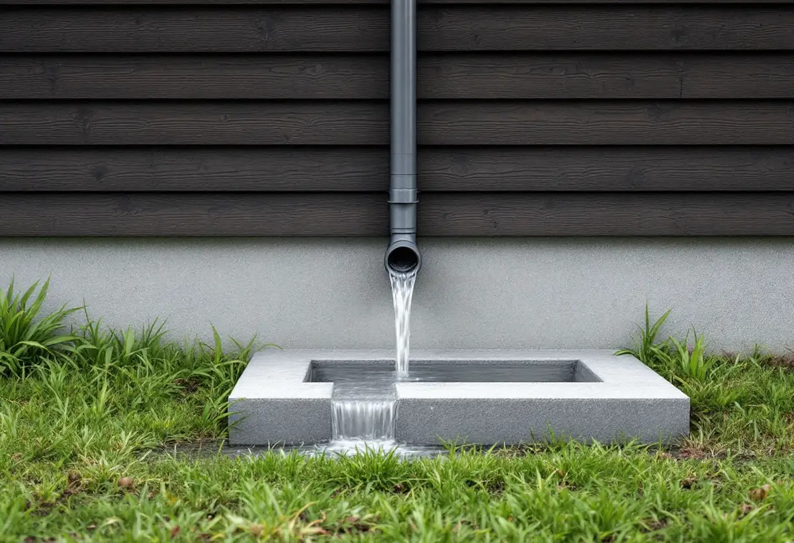

Besök i regnväder eller torka
Vi ser var vattnet rinner av taket och var det hamnar på tomten.
Huddinge kommun vill att regnvattnet från taken tas om hand på tomten. Det gör hängrännor, stuprör och utkastare till mer än en detalj – de är början på husets dagvattenhantering. Geal Entreprenad AB har egna plåtslagare som byter rännor, bleck och beslag i hela Huddinge, med gratis platsbesök och skriftligt kostnadsförslag.

I broschyren om dagvatten skriver Huddinge kommun att ambitionen är att ta hand om dagvattnet lokalt genom att låta regnvattnet infiltrera på tomten. Saknas förutsättningar för det ska flödet i stället fördröjas inom tomten. Som fastighetsägare ansvarar du för att hanteringen följer detaljplanen och, där det finns allmänt ledningsnät, VA-huvudmannens bestämmelser.
Kommunen beskriver flera sätt att göra det. Stuprör kan förses med utkastare och ränndalsplattor som leder vattnet ut på gräsmattan, och vattnet kan samlas i regnvattentunnor. En tunna fylls relativt snabbt, så den bör ha ett överfyllnadsskydd som leder överskottet vidare till en grönyta.
Vattnet får inte ledas ut på gatan eller till andra fastigheter. Därför planerar vi var stupröret ska sitta tillsammans med dig, så att det mynnar där marken kan ta emot vattnet.

Broschyren anger att utkastaren – böjen längst ner på stupröret – bör vara minst 20 centimeter lång för att undvika vattenstänk på fasaden. Närmast huset bör marken luta minst 1:20, det vill säga minst 15 centimeter nivåskillnad på en sträcka av minst tre meter från byggnaden.
En kort eller avbruten utkastare syns ofta som fuktfläckar och avflagnad färg nederst på sockeln. När vi byter stuprör ser vi därför till att röret slutar i rätt höjd och riktning, och vi påpekar om marken lutar mot huset så att du kan åtgärda det.
Hängrännorna ska ha jämnt fall mot stupröret och sitta så att vattnet från takfoten hamnar i rännan och inte bakom den. I skogsnära lägen med mycket barr kan lövsilar minska igensättningen. Mer om rännorna i allmänhet finns på sidan om hängrännor och stuprör.
Kommunen påminner om att dagvatten ofta når närmaste sjö eller vattendrag utan rening, och att metaller från byggnader är en av föroreningarna. Vid om- och nybyggnad råder den därför villaägare att välja tak- och fasadmaterial som inte förorenar dagvattnet, och nämner kopparbleck och omålade zinkytor som exempel att undvika.
För plåtarbetet betyder det att vi i första hand föreslår belagd plåt för rännor, bleck och beslag. För landsbygden anger kulturmiljöprogrammet att tegeltäckta tak är vanligast, men att plåt och sedum också kan vara aktuellt i vissa miljöer. Samtidigt skriver kommunen att plåtfasader har svårare att passa in i landsbygdens bebyggelse.
Ska taket bytas helt hänger materialvalet ihop med resten av taket, se takrenovering i Huddinge.
Kulturmiljöprogrammet beskriver småhusområdena från 1910–40-talet med träpanel, enkelt spröjsade fönster och sadeltak eller brutna tak täckta med tegel. På 1960–80-talets grupphus varierar takformerna från kraftigt lutande sadeltak till flacka valmade tak och pulpettak. På ett brutet tak är knäcken och ränndalarna plåtslagarens viktigaste ställen, och på ett pulpettak är det takfoten och anslutningen mot väggen.
Huddinge kommun skriver att du inte behöver bygglov för att renovera fasaden eller byta tak om du byter befintligt material mot samma sorts material med samma färg, och att utseendet på ett en- eller tvåbostadshus får ändras utan lov om huset eller området inte är kulturhistoriskt värdefullt. Vill du ha ett skriftligt besked kan du söka frivilligt bygglov.
Mer om oss som lokal firma finns under takläggare i Huddinge.
Vi ser var vattnet rinner av taket och var det hamnar på tomten.
Stuprörens placering och utkastare bestäms efter hur marken kan ta emot vattnet.
Rännor, stuprör, bleck och beslag redovisas var för sig i skrift.
Vi föreslår plåt och kulör efter huset och kommunens råd om dagvatten.
Rännor monteras med fall mot stupröret och utkastare i rätt höjd.
Vi går igenom avvattningen med dig och visar var vattnet tar vägen.
Skatteverket räknar det som rotarbete i ett småhus att reparera, rengöra eller byta hängrännor, stuprör och plåttak och att byta fönsterbleck. Avdraget är högst 30 procent av arbetskostnaden och högst 50 000 kr per person och år, med 75 000 kr som gemensamt tak för rot och rut.
Regnvattentunnor och ränndalsplattor räknas som material. Geal drar avdraget direkt på fakturan.
Längden på rännor och stuprör, hur många hörn och utkastare som behövs, om bleck och beslag byts samtidigt och hur ställningen kan stå på en sluttande tomt. Efter ett gratis platsbesök får du ett skriftligt kostnadsförslag.
Plåttak, hängrännor och beslag.
Plåtslagare i Stockholm →Takbyte, takbesiktning och plåtarbeten.
Takläggare i Huddinge →Stuvsta, Snättringe och Skogås.
Takrenovering i Huddinge →Avlopp, egen brunn och ritningar.
Attefallshus i Huddinge →Grannar, tomtgräns och lovärendet.
Byggföretag i Huddinge →Nytt trä i en gammal fasad.
Fasadmålning i Huddinge →Egnahem, grupphus och 70-talsvillor.
Fönsterbyte i Huddinge →Okopplade bågar, tätning och lagning av bottenstycken.
Fönsterrenovering i Huddinge →Slipa golvet och byt ytbehandling.
Golvslipning i Huddinge →Grupphus, egnahem och stugor.
Köksrenovering i Huddinge →Egnahem, grupphus och permanentade stugor.
Badrumsrenovering i Huddinge →Villor, grupphus och fritidshus i Huddinge.
Fasadrenovering i Huddinge →Grupphus, radhus och kedjehus i Huddinge.
Golvläggare i Huddinge →Fasad, fönster och rum i Huddinge.
Målare i Huddinge →Altaner, förråd och gäststugor.
Snickare i Huddinge →Tyngre tak, stugor och landsbygd.
Takbyte i Huddinge →Ny tapet på lagad spännpapp.
Tapetsering i Huddinge →Råd för tre epoker av småhus.
Tillbyggnad i Huddinge →Rekordårens hus inifrån och ut.
Totalrenovering i Huddinge →